Na conversa
Pergunte se alguém levantou a mão ou para onde uma pessoa está apontando. A descrição se baseia no que aparece na imagem.
Tecnologia assistiva feita no Ceará
Uma mão levantada, alguém apontando para um objeto, um aviso no mural. O Ver + ajuda pessoas cegas e com baixa visão a acessar informações visuais do ambiente por meio de descrições faladas.

Em uma conversa, alguém pode apontar para um objeto sem dizer qual é. Na escola, um aviso pode existir apenas no mural. O Ver + busca tornar esses detalhes consultáveis por voz, para que cada pessoa possa interpretar a situação e decidir como agir.
Leia a tese social e suas referências Veja como o projeto é desenvolvido e avaliado
Aplicativo Android
Escolha o que saber sobre a cena. A descrição aparece na tela da câmera, onde você também pode ouvir novamente ou fazer uma pergunta.
Na tela inicial, escolha a câmera ESP32 por Bluetooth ou a câmera do celular. Faça uma captura ou ative a descrição automática na tela da câmera.
Use o cartão À sua frente para ouvir uma descrição ou perguntar sobre a imagem. A IA analisa a captura online. Texto e cores são processados no aparelho.
O Android lê o resultado em voz alta. Você pode repetir, interromper ou pedir um detalhe sobre a imagem capturada.
Abra Guia por voz, toque em Ativar “Ei, Guia” e permita o microfone. Com o app aberto, diga “Ei, Guia”. A chamada pode interromper a narração. Ao ouvir “Ouvindo”, diga, por exemplo, “Abra a câmera ESP”, “Ouvir de novo” ou “Descrição rápida”. Você também pode usar o botão Falar.
A palavra de ativação funciona offline nos aparelhos compatíveis. O reconhecimento dos comandos pode depender do serviço de voz do Android.
Descrições e perguntas sobre imagens requerem internet e uma chave pessoal configurada em Serviços de IA. O serviço recebe a imagem para análise. Escolha o detalhamento da resposta e o esforço da análise separadamente. As preferências que você adicionar para orientar a descrição acompanham o pedido online.
A leitura de texto impresso e a identificação da cor aproximada na região central da imagem funcionam no próprio aparelho. Para ouvir offline, use uma voz em português disponível localmente no Android.
Nos ajustes da IA, defina o que a descrição deve priorizar. Nas telas de câmera, use o indicador de consumo para consultar as chamadas, os tokens informados pelo serviço e a meta diária configurada no aparelho.
O app oferece rótulos para leitor de tela, suporte a fontes ampliadas, respostas em texto e áudio e controles de velocidade da fala nos ajustes da câmera. A compatibilidade com TalkBack ainda passa por validação prática.
Iluminação, ângulo e enquadramento afetam o resultado. A IA pode errar ou omitir detalhes. Em travessias e outras decisões de segurança, use seus recursos e técnicas habituais de mobilidade.
No protótipo, o celular solicita uma foto à ESP32-CAM. A placa envia a imagem por Bluetooth e o app faz a leitura local ou encaminha a captura para análise online, conforme a ação escolhida.
Com o firmware R11.2, o app pode pedir outra foto com flash quando a primeira indica baixa luminosidade. Se a imagem continuar escura, confira se a lente está coberta ou se a câmera está apontada para a cena.
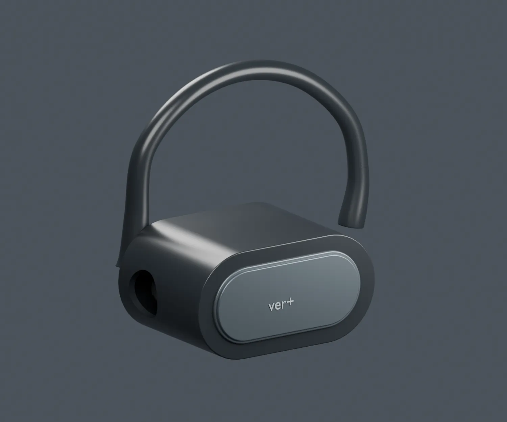
O APK gratuito é uma versão de teste para Android 9 ou superior. Use a câmera do aparelho para experimentar a leitura local ou configure o serviço de IA para descrições e perguntas sobre imagens.
Projeto escolar em Pereiro, Ceará
Estudantes e educadores da EEEP Professora Maria Célia Pinheiro Falcão unidos por tecnologia e impacto social.
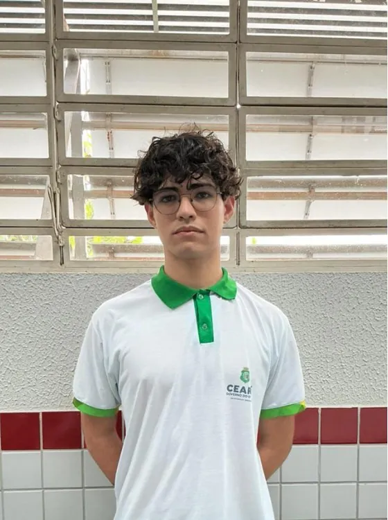
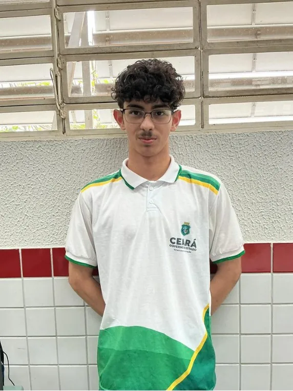
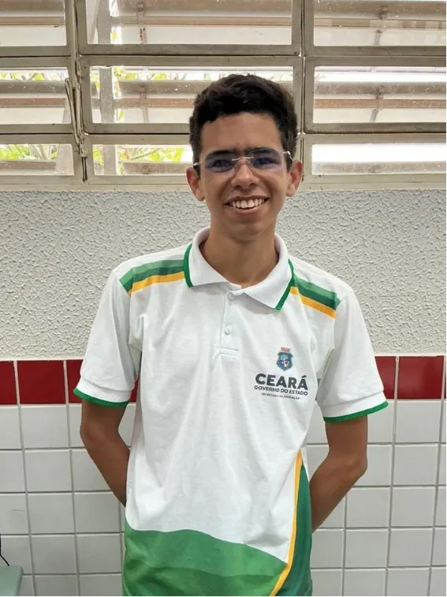
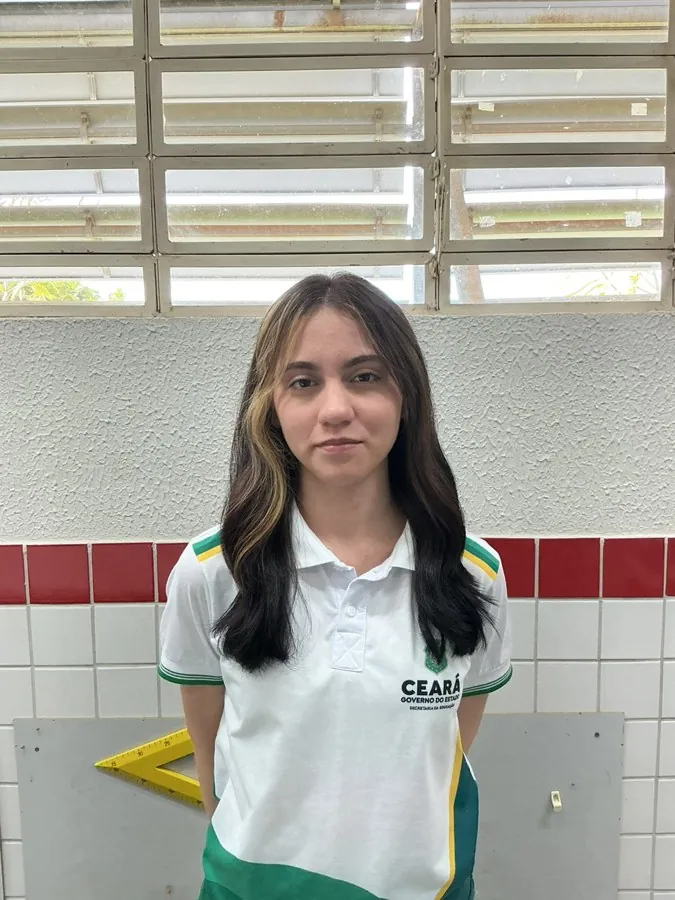
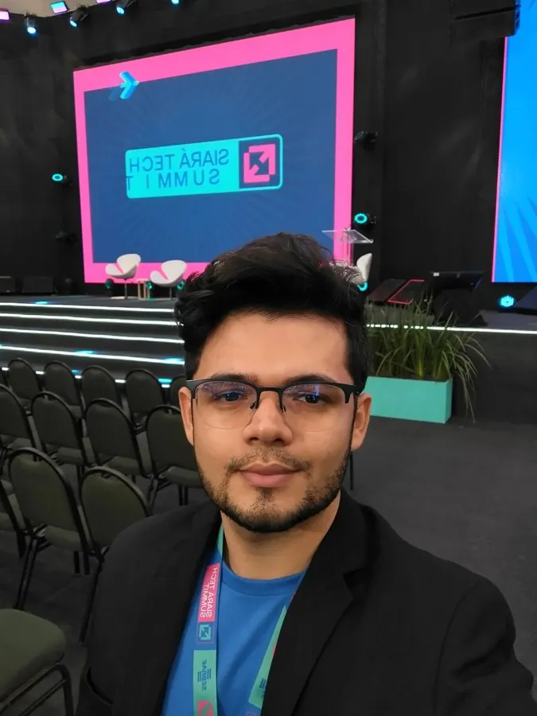
Empreendedorismo
Formação ampliada do Ver+ nas disciplinas de Gestão de Startup I, II e III.
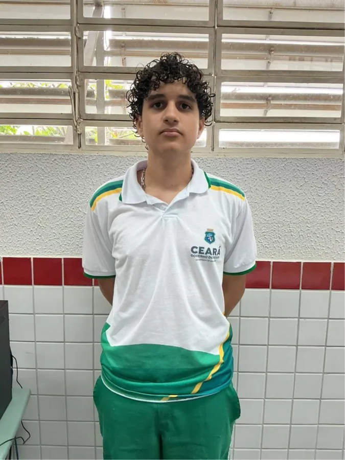
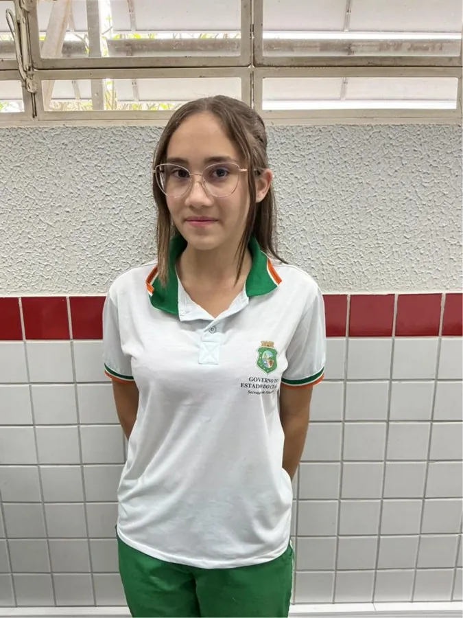
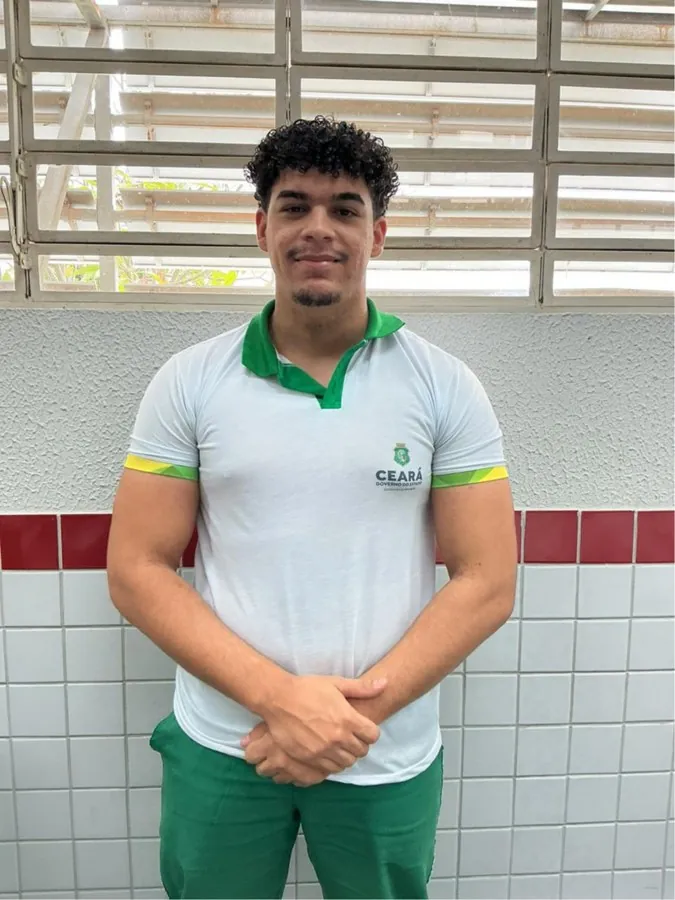
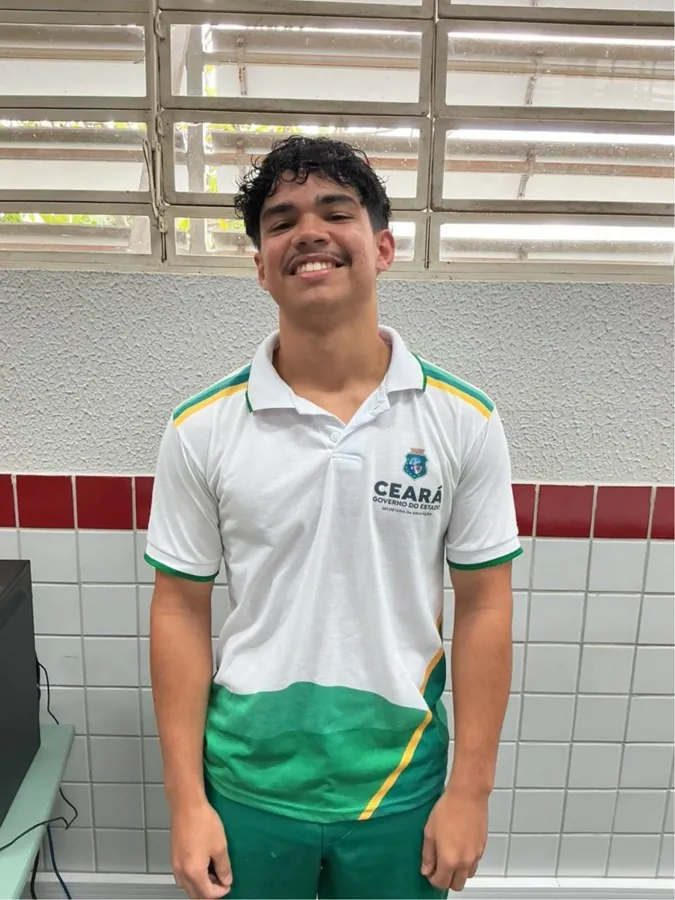
Caderno de campo
Navegue pelos registros reais do desenvolvimento do Ver+, das reuniões aos testes e à documentação.
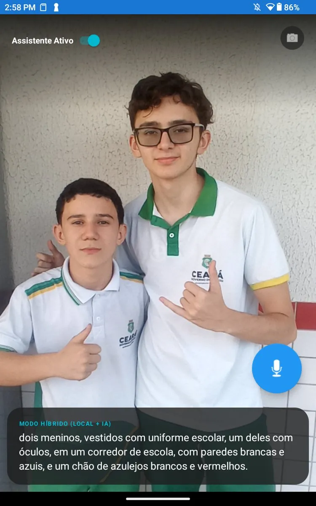
Use os botões anterior e próximo, as miniaturas ou as setas do teclado para mudar de registro.
Acompanhe o Ver+
Acompanhe os testes e as atualizações do protótipo.
O site Ver+ usa o Google Analytics para medir visitas e visualizações somente quando você permite. O Google recebe dados da página visitada, do navegador, do dispositivo e da origem da visita, podendo estimar a região do acesso. Cookies de estatísticas ajudam a distinguir visitas neste navegador. Não enviamos nomes, e-mails nem parâmetros dos endereços das páginas ao Analytics.
Você pode recusar ou retirar sua permissão pelo botão abaixo. A escolha fica salva neste navegador por até seis meses. Ao recusar, o site continua funcionando e o código de estatísticas não é carregado. A retirada vale para os próximos acessos e não apaga automaticamente dados já processados.
O responsável pelo site é o projeto Ver+. Para dúvidas sobre privacidade ou solicitações referentes aos seus dados, escreva para vermaismocicult@gmail.com. Saiba como o Google usa dados de sites parceiros e consulte a Política de Privacidade do Google.
Com sua permissão, usamos cookies do Google Analytics para contar visitas e visualizações e melhorar o site Ver+. Você pode recusar e continuar navegando. Saiba mais sobre privacidade.